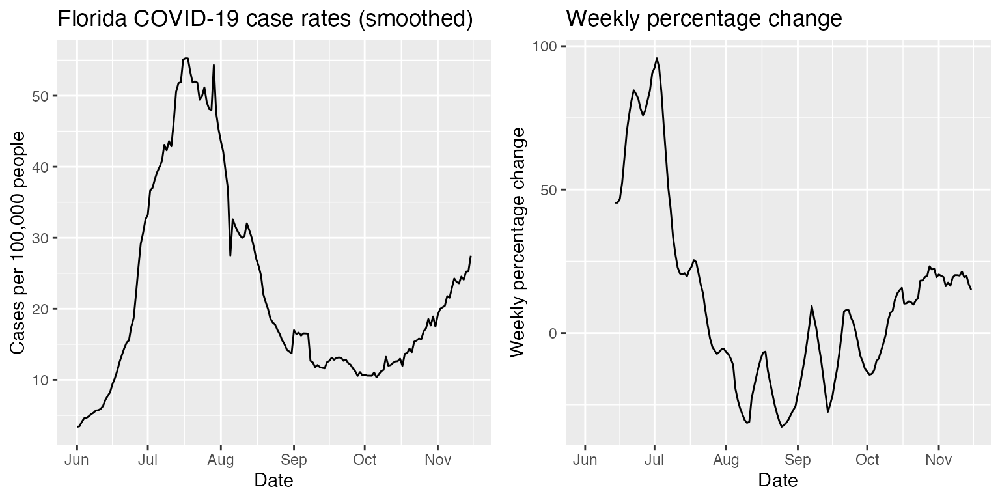

2. Compute percent change of a COVIDcast signal over time
Source:vignettes/pct-change.Rmd
pct-change.RmdA simple way of assessing the growth or decay of a signal is to examine the percentage change in its incidence over two adjacent time windows of equal length. As shown here, this calculation can be done with the pct_change() function.
We’ll use the same reporting data here that we used in the Getting started guide. The code chunk below fetches the data from the Delphi API.
library(covidcast)
library(dplyr)
start_day <- "2020-06-01"
end_day <- "2020-11-15"
geo_values <- c("ca","fl","ny","tx")
case_rates <- covidcast_signal(data_source = "usa-facts",
signal = "confirmed_7dav_incidence_prop",
start_day = start_day,
end_day = end_day,
geo_type = "state",
geo_values = geo_values) %>%
select(data_source, signal, geo_value, time_value, value)
case_rates %>%
table_head(title = "Daily COVID-19 cases per 100,000 pop. (7-day trailing average)")| data_source | signal | geo_value | time_value | value |
|---|---|---|---|---|
| usa-facts | confirmed_7dav_incidence_prop | ca | 2020-06-01 | 6.701 |
| usa-facts | confirmed_7dav_incidence_prop | fl | 2020-06-01 | 3.381 |
| usa-facts | confirmed_7dav_incidence_prop | ny | 2020-06-01 | 6.570 |
| usa-facts | confirmed_7dav_incidence_prop | tx | 2020-06-01 | 4.406 |
| usa-facts | confirmed_7dav_incidence_prop | ca | 2020-06-02 | 6.389 |
| usa-facts | confirmed_7dav_incidence_prop | fl | 2020-06-02 | 3.454 |
The table_head function used above is an internal function that we use in these tutorial vignettes to display table heads. The source code can be found in the vignettes/pct-change.Rmd file used to build this page.
Percentage change
Definition
For any fixed date with a trailing window of n days, where \(n\in\{2,4,6,\dots\}\), we define the \(n/2\)-day percentage change of a signal as \[\frac{B - A}{A}\cdot 100\%,\] where
\(A\) is the total incidence of the signal over the first \(n/2\) days of the trailing window,
\(B\) is the total incidence of the signal over the last \(n/2\) days of the trailing window.
The pct_change() function exploits the functionality of slide_by_geo() to slide this trailings calculation over a covidcast_signal data frame.
The default setting is n = 14, corresponding to the percentage change in a signal over back-to-back weeks. We refer to this here as weekly percentage change. Similarly, we’ll use daily percentage change to refer to the n = 2 case.
Function call
The percentage change calculation follows via the following one-line call to pct_change():
library(modeltools)
case_rates <- pct_change(case_rates, n = 14, col_name = "pct_change")
case_rates %>%
table_head(title = "Daily COVID-19 cases per 100,000 pop. (7-day trailing average)", n = 25)| geo_value | data_source | signal | time_value | value | pct_change |
|---|---|---|---|---|---|
| ca | usa-facts | confirmed_7dav_incidence_prop | 2020-06-01 | 6.701 | NA |
| ca | usa-facts | confirmed_7dav_incidence_prop | 2020-06-02 | 6.389 | NA |
| ca | usa-facts | confirmed_7dav_incidence_prop | 2020-06-03 | 6.497 | NA |
| ca | usa-facts | confirmed_7dav_incidence_prop | 2020-06-04 | 6.863 | NA |
| ca | usa-facts | confirmed_7dav_incidence_prop | 2020-06-05 | 7.109 | NA |
| ca | usa-facts | confirmed_7dav_incidence_prop | 2020-06-06 | 6.808 | NA |
| ca | usa-facts | confirmed_7dav_incidence_prop | 2020-06-07 | 6.741 | NA |
| ca | usa-facts | confirmed_7dav_incidence_prop | 2020-06-08 | 6.753 | NA |
| ca | usa-facts | confirmed_7dav_incidence_prop | 2020-06-09 | 6.993 | NA |
| ca | usa-facts | confirmed_7dav_incidence_prop | 2020-06-10 | 7.191 | NA |
| ca | usa-facts | confirmed_7dav_incidence_prop | 2020-06-11 | 7.319 | NA |
| ca | usa-facts | confirmed_7dav_incidence_prop | 2020-06-12 | 7.479 | NA |
| ca | usa-facts | confirmed_7dav_incidence_prop | 2020-06-13 | 7.719 | NA |
| ca | usa-facts | confirmed_7dav_incidence_prop | 2020-06-14 | 7.817 | 8.840 |
| ca | usa-facts | confirmed_7dav_incidence_prop | 2020-06-15 | 7.883 | 11.118 |
| ca | usa-facts | confirmed_7dav_incidence_prop | 2020-06-16 | 8.020 | 11.861 |
| ca | usa-facts | confirmed_7dav_incidence_prop | 2020-06-17 | 8.529 | 13.018 |
| ca | usa-facts | confirmed_7dav_incidence_prop | 2020-06-18 | 8.624 | 14.631 |
| ca | usa-facts | confirmed_7dav_incidence_prop | 2020-06-19 | 8.561 | 15.965 |
| ca | usa-facts | confirmed_7dav_incidence_prop | 2020-06-20 | 8.717 | 15.848 |
| ca | usa-facts | confirmed_7dav_incidence_prop | 2020-06-21 | 8.938 | 15.603 |
| ca | usa-facts | confirmed_7dav_incidence_prop | 2020-06-22 | 10.366 | 17.848 |
| ca | usa-facts | confirmed_7dav_incidence_prop | 2020-06-23 | 11.408 | 21.925 |
| ca | usa-facts | confirmed_7dav_incidence_prop | 2020-06-24 | 11.612 | 24.577 |
| ca | usa-facts | confirmed_7dav_incidence_prop | 2020-06-25 | 12.058 | 27.803 |
We do not allow missing values in the percentage change calculation, so as we see above, the weekly_pct_change is NA until n = 14 days of data are available.
Visualizing the results
Below we plot the weekly percentage change of the smoothed COVID-19 case rates fetched above alongside the smoothed COVID-19 case rates themselves. Here, we focus solely on Florida COVID-19 case rates.
library(ggplot2)
library(gridExtra)
state <- "fl"
p1 <- ggplot(case_rates %>% filter(geo_value == state), aes(x = time_value, y = value)) +
geom_line() +
labs(title = "Florida COVID-19 case rates (smoothed)",
x = "Date", y = "Cases per 100,000 people")
p2 <- ggplot(case_rates %>% filter(geo_value == state), aes(x = time_value, y = pct_change)) +
geom_line() +
labs(title = "Weekly percentage change", x = "Date", y = "Weekly percentage change")
grid.arrange(p1, p2, nrow = 1)
Post-hoc smoothing a percentage change time series
For smaller choices of n, the \(n/2\)-day percentage change of a covidcast signal can become increasingly volatile. In these cases, post-processing the signal’s percentage change times series with a smoother may provide a times series that better reflects the true temporal dynamics of the covidcast signal at the n-day scale.
Here, first we compute the 1-day percentage change (which we will also call daily percentage change) time series of the state-level COVID-19 case rates examined above, and then we post-process each state’s percentage change time series with a 7-day trailing average via a suitable application of slide_by_geo().
case_rates <- case_rates %>%
pct_change(n = 2, col_name = "pct_change_daily") %>%
slide_by_geo(~ Mean(.x$pct_change_daily), n = 7, col_name = "pct_change_daily_7dav")| geo_value | time_value | value | pct_change_daily | pct_change_daily_7dav |
|---|---|---|---|---|
| ca | 2020-06-01 | 6.701 | NA | NaN |
| ca | 2020-06-02 | 6.389 | -4.662 | -4.662 |
| ca | 2020-06-03 | 6.497 | 1.692 | -1.485 |
| ca | 2020-06-04 | 6.863 | 5.632 | 0.887 |
| ca | 2020-06-05 | 7.109 | 3.588 | 1.563 |
| ca | 2020-06-06 | 6.808 | -4.237 | 0.403 |
Visualizing the results
Here we show again the COVID-19 case rates in Florida, but now next to its daily percentage change time series (shown in red). As expected, a direct calculation of the percentage change in COVID-19 case rates at the daily level yields a highly volatile time series that is almost surely not representative of real variations in the spread of COVID-19 in Florida. The daily percentage change post-processed with a 7-day trailing average (shown in blue) is likely a better indicator.
library(tidyr)
p1 <- ggplot(case_rates %>% filter(geo_value == state), aes(x = time_value, y = value)) +
geom_line() +
labs(title = "Florida COVID-19 case rates (smoothed)", x = "Date", y = "Cases per 100,000 people") +
theme(plot.margin = margin(l = 0.1, t = 0.2, b = 1.6, unit = "cm"))
case_rates <- case_rates %>%
select(-pct_change) %>%
pivot_longer(cols = starts_with("pct"), names_to = "pct_change", values_to = "pct_change_val")
p2 <- ggplot(case_rates %>% filter(geo_value == state), aes(x = time_value)) +
geom_line(aes(y = pct_change_val, color = pct_change)) +
scale_color_manual(values = c('red', 'blue')) +
labs(x = "Date", y = "Daily percent change", title = "Daily percent change") +
theme(legend.position = "bottom", legend.title = element_blank())
grid.arrange(p1, p2, nrow = 1)